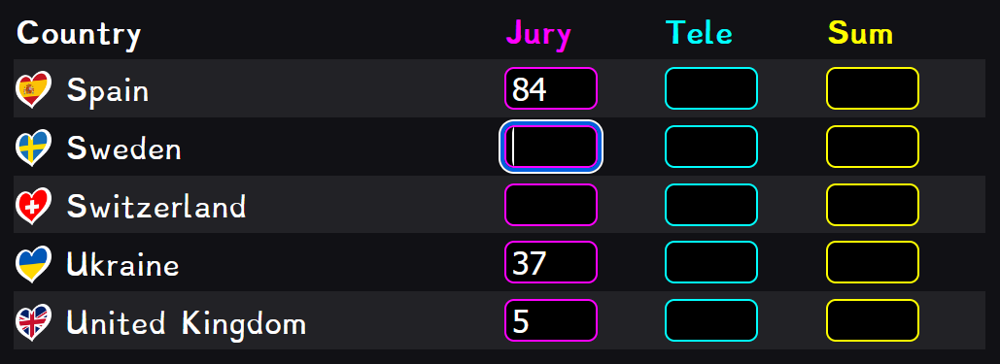
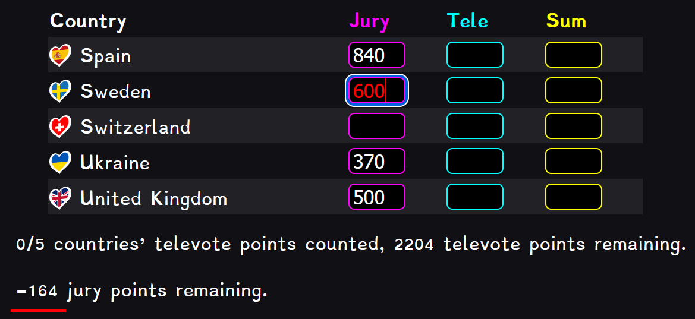
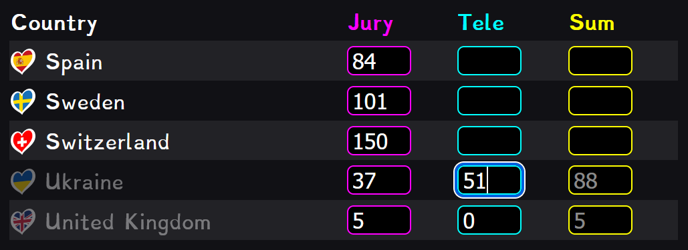
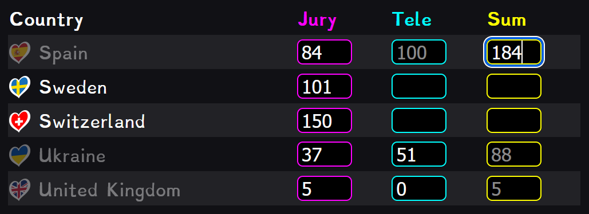
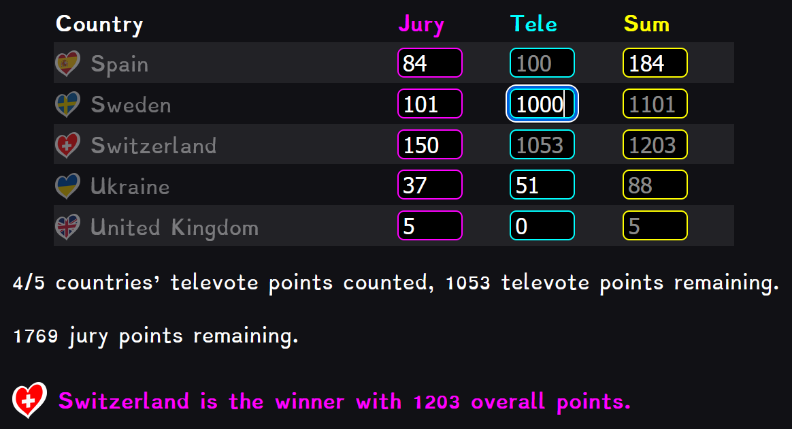
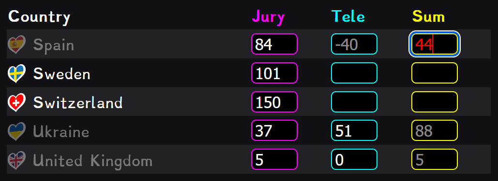

Help page
I created this tool to predict the winner of Eurovision immediately after the televote points of the country, that came second in the jury vote, are revealed. Previously I have used my phone's calculator for this, but the user experience is error-prone. This tool includes error checking and provides visual feedback to the user. I am not affiliated with Eurovision and this tool was created without permission from Eurovision.
This tool relies on the fact that the total number of points given is known: A jury from every participating country (37) gives points (1 + 2 + 3 + 4 + 5 + 6 + 7 + 8 + 10 + 12 = 58), and in total the juries give 37 * 58 = 2146 points. The televote happens in a similar manner: all participating countries (37) and The Rest Of The World give 58 points each, totaling (37 + 1) * 58 = 2204. There are many ways to do this calculation, but for example, by subtracting the points of all other
countries from the total points to be given (4350), one gets the points of the remaining country.
Extra: Commentary on the system
The introduction of Rest Of The World points a couple of years back was either poorly communicated by Eurovision or I had somehow missed it in the leadup to the final. My lackluster preparation led me to falsely believe that Käärijä had won by a point. I was quite disappointed firstly when Loreen won and secondly when I learned about my mistake of omitting ROTW from my calculation.
It is somewhat misleading that year after year the hosts announce that half of the points come from the juries and half from the audience, when that is not exactly true.
Operation
The tool is designed to be used in the same order as the television broadcast. However, there is not much use in entering the jury votes before all the jury votes are revealed, as they change with every jury. Immediately after the jury vote is finished I recommend entering the jury vote results in ascending order.
Extra: Entering jury points
The jury vote results don't actually need to be entered at all for the tool to function, but they're a useful checksum when entering the other points and without jury votes the tool will not announce a winner, the user has to look for who has the most points in the end.
The jury vote results should be entered in ascending order because the bottom countries receive their televote results first, after which their televote points are no longer visible.
If you enter too many jury vote points the system will warn you:
When entering the televotes as they come in, you will see that the tool calculates the sum of a country's jury vote points and televote points, and places it in grey in the "sum" column. This requires no action from the user, it is only a placeholder. However, if it doesn't match the value on your television, you should be concerned. In this way the jury vote results act as a checksum when entered. When a country's televote points have been entered, the country's name and flag are greyed out for clarity.
Extra: Calculations and placeholders
When two out of three columns have a value, the third column is calculated. You could, for example, enter a country's jury vote points and sum, and the tool would calculate the televote points:
After all countries but one have had their televote points entered, the tool calculates the televote points of the remaining country and puts the value in a placeholder. If that country also has a jury vote value, the tool calculates the sum for that country. To announce the winner, the tool finds the country with the highest sum.
Countries with no sum (not even a placeholder) are excluded from the winner search. This is why the jury vote results should be entered.
Advanced tips
Statistics snippets
The two lines of text under the table update to reflect the progress of entering the results. They keep track of the remaining jury vote points and televote points that haven't yet been given to any country.
"Countries to remove"
This text input is used to remove unwanted countries from the table. My plan is to exclude disqualified countries from this tool before the grand final, but in case I don't do that, or for whatever testing purposes, the option is there for the user. Enter a comma-separated list of country names. It is not case-sensitive, but it is space-sensitive, so for example "uNiteD KiNgDOm" is fine but "UnitedKingdom" is not. Whitespace next to commas doesn't matter. The input field uses LocalStorage in the background to cache the value between sessions.
Refresh the page to apply the change.
Redcell
When you enter an erroneous value, the text of the cell turns red as an indicator. This is not the end of the world: the tool will still continue functioning mostly normally, but you should be aware of why it is giving you the red cell and what effects an incorrect value there might have. A simple way to get rid of a redcell is to delete the red value. All of the redcell logic is explained below:
-
Whenever you edit the value of a cell, all of the cells on that row are initially turned back to white if they were red.
- This could be classified as a bug, but it's the simplest way to remove stale redcells, so it stays for now.
-
The cell you're editing turns red if the sum of jury points given out is greater than it should be,
- So if you sum every value in the "jury" column and it's
>2146, the cell you're in turns red.
- So if you sum every value in the "jury" column and it's
- if a negative value is entered,
-
if the calculation result from two columns results in a negative number,
- Requires a value in the "sum" column. For example:
- if a number that is not equal to the placeholder is entered, or
- if all three columns have a value and one value is changed such that the calculation is no longer true.
Whenever a cell turns red, a simple explanation is provided in the developer console. This can help you understand what you're doing wrong.
Published on 2025-05-10